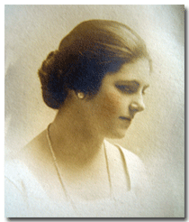
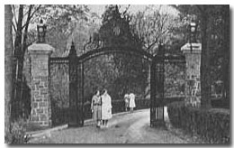
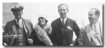
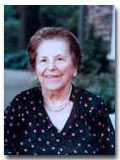
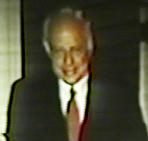
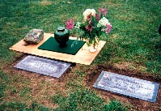

 |
Mary Barnes Billings Anthony Mary Barnes Anthony was born in Allendale, New Jersey, on September 21, 1899. She was a realtor, gift shop owner, and mother. |
|
|
Important
Facts
|
||
| September 21, 1899 | Born in Allendale, New Jersey, on her mother's farm. Mary was the daughter of Laura Josephine Frontgous (1868-1949) and Walter Dayton Anthony (1868-1926). Source: 1900 US Census for Allendale, NY. | |
| June 1, 1900 | Her family was listed as living with the Letts family in the 1900 US Census as: Richard R Letts (41), Sophia A Letts (35), Walter D Anthony (31 - Salesman), Laura J. Anthony (31), Mary B. B. Anthony (8 mo.), and servant, Michael Beal (45). Source: 1900 Census, Allendale, Bergen, New Jersey; Roll: T623 954; Page: 1A; Enumeration District: 1. | |
| 1907 | The family moved from Allendale to Ridgwood, New Jersey when Mary was about eight. Source: "Mary's Family Connections," 1979, pg 43-44. | |
| April 19, 1910 | Her family was listed in the 1910 US Census as: Walter D Anthony (39 - Sales Manager), Laura J. (38), Mary B B (10), Oliva E. (7), Elleanor S. (4), Mrs. Sophia A Letto (43, sister-in-law), and Laura Courter (22 - servant). Source: 1910 Census Place: Ridgewood, Bergen, New Jersey; Roll: T624_870; Page: 3B; Enumeration District: 47; Image: 9. | |
| July 23, 1917 | In a newspaper article entitled "Many Soldiers at the River Spend Sunday at Alexandria Bay" A.D. Henderson, Master Gerard Henderson, and Miss Mary Anthony, of Suffern were listed. Source: Watertown Daily Times (Watertown, NY). | |
| 1918-1920 | Attended the National Park Seminary finishing school for girls at Forest Glen, Maryland, just outside of Washington D.C. It was one of the most prestigious women’s schools in the country. Source: "Mary's Family Connections," 1979. | 
National Park Seminary Front Gate. |
| January 5, 1920 | Her family was listed in the 1920 US Census as: Walter D Anthony (49 - Sales Manager) Laura J. (45), Mary B (20), Oliva E. (16), Ella S. (13), Sophie Letts (49 - Sister-In-Law) and servant, Sussie Porten (30). Source: 1920 Census Place: Ridgewood, Bergen, New Jersey; Roll: T625_1019; Page: 5A; Enumeration District: 97; Image: 873. | |
| Mary met Alex Henderson Jr. at a costume party given by Mrs. Elmer Snow. Source: "Mary's Family Connections," 1979. | ||
| February 14, 1920 | Married Alexander Henderson Jr. in her family home in Ridgewood, New Jersey. | |
| February 14, 1920 | Henderson Sr. built a house for them in Suffern, New York across the road from their own house. |

Suffern House |
| Mary mentioned in her book that Maurice Henderson, Mary Ann, Charles, and Angie Hendrickson would come to the Hendersons in Suffern for Thanksgiving. Source: "Mary's Family Connections," 1979, pg. 90. | ||
| April 17, 1922 | Mary Ella Henderson was born at 6:45 A.M. at the Good Samaritan Hospital in Suffern, New York. Source: "Mary's Family Connections," 1979. | |
| March 26, 1924 | Alexander Dawson Henderson III was born at the Fith Avenue Hospital in New York City, New York at 11:45 A.M. Source: Birth Certificate. | |
| May 25, 1927 | Adolph L. Gondran leaves Nonny $25,000.00. Source: Adolph L. Gondran's Will. Adolph L. Gondran is Nonny's grandmother's (Therese Gondran) brother. | |
| 1929-1932 | The family moved into a large two-story home in Tallman, New York. Lived in Tallman for four years. They had a chauffeur, cook, and an upstairs maid. Her husband kept his polo pony in the barn. The property had an apple orchard. Her mother Anthony had a lovely cottage on the property (behind the orchard). |  Nonny & friends |
| December 19, 1929 | Mary and her mother were in an car accident. The Rockland County Leader newspaper said, Mrs. A. D. Henderson, Jr., of Tallman, and her mother, Mrs. Laura Anthony, escaped with minor injuries last Thursday afternoon when a car driven by Mrs. Henderson was struck head-on by a truck. Source: Rockland County Leader. | |
| 1930 | The 1930 U.S. Census lists Alexander D. Henderson (35), Nonny (30), Mary Ella (7), Alexander (5) and Laura J Anthony (61 - Mother-in-law), living on Cherry Lane in Ramapo, Rockland, New York. Source: Year: 1930; Census Place: Ramapo, Rockland, New York; Roll: 1641; Page: 1A; Enumeration District: 38; Image: 12.0. | |
| 1932 | The family moved to Hudson View Gardens duplex apartment at 1836 Pinchurst Avenue, overlooking the Hudson River. |
Alex & Mary Ella |
| 1934 | Nonny Separated from her husband. | |
| Spent winters in Palm Beach Florida because the dividends were cut from Avon. Her husband, stayed in New York where he met Lucy. | ||
| Summer 1935 | Divorced Alexander Henderson Jr. in Reno, Nevada. Took six weeks to get the divorce. | |
| 1939 | Moved to a two-bedroom Englewood apartment on Palisades Avenue, New Jersey, where she brought up her two children. | |
| April 2, 1940 | The 1940 Census shows that Mary A. (46), Mary-Ella (17), and Alexander D. Henderson (16) were living in an apartment at 100 Palisade Ave. Source: ED 2-71; Englewood City Ward 2 bounded by (N) Palisade Av; Englewood City, Bergen, New Jersey. | |
| 1943 | During World War II, she served in the American Woman's Volunteer Service for the U.S. Army. Lectured at army camps about camouflage in New Jersey. Source: "Mary's Family Connections," 1979. | |
| 1946 | She became manager of a gift shop at the Englewood Hospital. Source: "Mary's Family Connections," 1979. | |
| Mary served on the board of directors for the Englewood Art Gallery. | ||
| 1949-1952 | She bought 1/2 ownership in the gift shop called The Side Door. |  Nonny |
| 1953 | She became a realtor at the Real Estate Office in Tenafly, New Jersey. | |
| 1950's | Mary came to California once a year to visit Alec and Pat when the Henderson boys were very small. | |
| 1959 | Moved to New York City. Bought an apartment at 325 East 72nd Street, New York City in 1962. | |
| October 22, 1964 | Lucy E. Henderson gifted Nonny 10,000 shares of Avon stock in trust with the Chase Manhattan Bank. Source: Trust Agreement. | |
| May 10, 1972 | She married Charles Leonard Lathrop whom she met on a cruise. Lived on Lathrop Farm in Lebanon, Connecticut. They spent their summers in Lebanon and their winters in New York. Mr. Lathrop died in 1980. |  Charles Leonard Lathrop |
| June 1979 | Mary wrote the book Mary's Family Connections, which is a genealogical record of her family ancestry. | |
| 1986 | She moved to Greenwich, Connecticut to be close to family and friends. | |
| 1991 | The 1st family reunion was held for Mary's 90th birthday. A Video tape was made of Nonny in her apartment in Greenwich, Connecticut. She talked about how "Mr. Henderson" built them a house in Suffern, New York where Alec and Mary-Ella grew up. | |
| February 19, 1992 | Nonny's wrote her Will in the state of Connecticut, county of Fairfield. Her grandson, Peter A. Hinrichs is the executor of the Will. | |
| September 09, 1994 | There was a family reunion for Nonny on her 95th birthday. | |
| September 17, 1999 | The 3rd family reunion for Mary's 100th birthday party was at Mary-Ella's house in Greenwich, Connecticut. Click here to see pictures of Nonny's 100th Birthday party. | |
| June 3, 2000 | Mary died in her sleep at age 100 in Greenwich, Connecticut. The cause of her death was pneumonia. Source: Connecticut Department of Health. Connecticut Death Index, 1949-2001 |  |
| June 13, 2000 | A memorial service took place at the Chancel of Christ Church in Greenwich, Connecticut. There was a reception at John and Dee Dee Griswold's home at Mead Point following the service. |